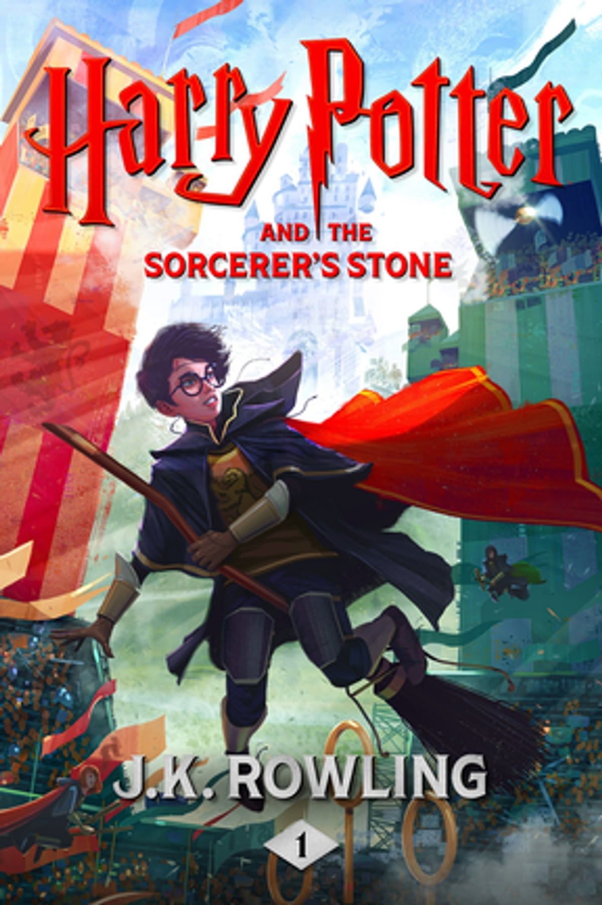

Hello! I am tejaswini, I am from guntur. I am self dependent girl. Some of my intersting facts are I love cooking some famous foods of Andhra like Ulavacharu biryani, Egg keema, Chicken biryani. I enjoy myself when cooking and I love to explore different places and different cultures and I spent like 2 years in travelling in India.
Harry Potter is a series of seven fantasy novels written by British author J. K. Rowling. The novels chronicle the lives of a young wizard, Harry Potter, and his friends Hermione Granger and Ron Weasley, all of whom are students at Hogwarts School of Witchcraft and Wizardry. The main story arc concerns Harry's conflict with Lord Voldemort, a dark wizard who intends to become immortal, overthrow the wizard governing body known as the Ministry of Magic and subjugate all wizards and Muggles (non-magical people).
 link to index| Name Of Country | Reason to visit | Days to spend |
|---|---|---|
| Spain | A number of independent kingdoms united in 1492 to form the Kingdom of Spain, a cultural patchwork that continues to shape the modern nation’s dynamic identity. Spain comprises much of the Iberian Peninsula, which it shares with Portugal on the southwestern edge of Europe. It also includes the Balearic Islands in the Mediterranean Sea, the Canary Islands in the Atlantic Ocean and two enclaves in North Africa. | 19 DAYS |
| Australia | The Commonwealth of Australia occupies the Australian continent. The country also includes some islands, most notably Tasmania. Indigenous people occupied the land for at least 40,000 years before the first British settlements of the 18th century. | 17 Days |
| France | The influence France has on the world, both in the past and today, is difficult to overstate. Located in Western Europe, France is one of the world’s oldest countries, and its reach extends around the globe through science, politics, economics and perhaps above all, culture. | 20 Days |
| Switzerland | Switzerland, officially called the Swiss Confederation, is a small country in Central Europe made up of 16,000 square miles of glacier-carved Alps, lakes and valleys. It’s one of the world’s wealthiest countries, and has been well-known for centuries for its neutrality. | 10 Days |